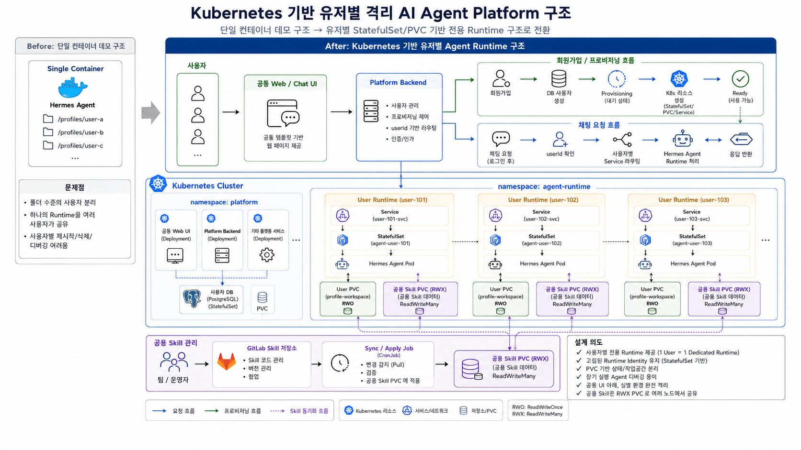

핵심 메시지
AI 모델을 하나의 서비스로 보는 대신 사용자별 runtime를 분리해 운영 책임을 확장했습니다.
Supporting Case
사용자별 Agent 실행 환경을 격리하고, skill과 log를 중앙에서 관리할 수 있는 multi-tenant runtime platform backend를 설계했습니다.
AI 모델을 하나의 서비스로 보는 대신 사용자별 runtime를 분리해 운영 책임을 확장했습니다.
2024.04 ~ 2025.10 (운영 고도화 기간 포함)
runtime 설계, 로그 수집 구조 설계, 배포/운영 정책 수립
Kubernetes StatefulSet, 공용 skill catalog, API gateway, 중앙 로그 수집
사용자별 실행 독립성을 확보하고 운영 추적성을 일관된 방식으로 축적
내부 PoC 단계에서 동일 컨테이너/프로세스에서 여러 사용자의 작업을 처리하면 의존성 충돌, 권한 경계, 작업별 상태 섞임이 발생했습니다. 또한 로그 분석 시 어떤 사용자 작업이 실패했는지 분리하기 어려워 운영자 개입 비용이 커졌습니다.

이 그림에서 봐야 할 점

이 그림에서 봐야 할 점
| 증상 | 원인 | 조치 | 결과 |
|---|---|---|---|
| 사용자 A의 스킬 변경이 사용자 B에 영향을 줌 | 공유 실행 환경에서 스킬 바인딩이 전역 적용됨 | 사용자별 런타임 분리 및 catalog binding 단계를 분리 | 격리성이 회복되고 충돌 이슈가 감소 |
| 실패 로그에서 작업 대상 사용자를 빠르게 식별하기 어려움 | 로그에 execution context가 충분히 포함되지 않음 | 요청/에이전트 id 기반 공통 로그 스키마 적용 | 장애 진단 시간이 단축됨 |
| 초기 onboarding 시 스킬/권한이 즉시 반영되지 않음 | 배포 동기화 시점이 분산 | runtime restart 정책과 catalog 조회 캐시 정책 정립 | 반영 지연이 줄고 운영 요청이 감소 |
사용자별 실행 독립성으로 상태 혼입 이슈를 감소시켰습니다.
중앙 로그 수집으로 장애 원인 파악 속도가 빨라졌습니다.
skill 배포와 runtime 제어를 API화해 수동 개입 지점을 줄였습니다.
격리 전략은 보안만의 문제가 아니라, 장애 확산 범위를 줄이는 운영 안정성 장치였습니다.
Runtime이 바뀌어도 catalog/API 계약이 흔들리지 않도록 하는 설계가 지속적 확장성의 핵심입니다.
시작/종료/실패의 최소 이벤트를 먼저 정교화하면 추가 기능의 디버깅 비용이 크게 줄어듭니다.